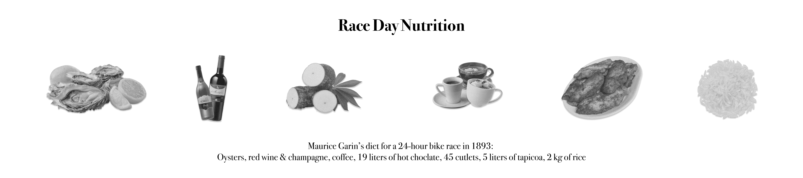
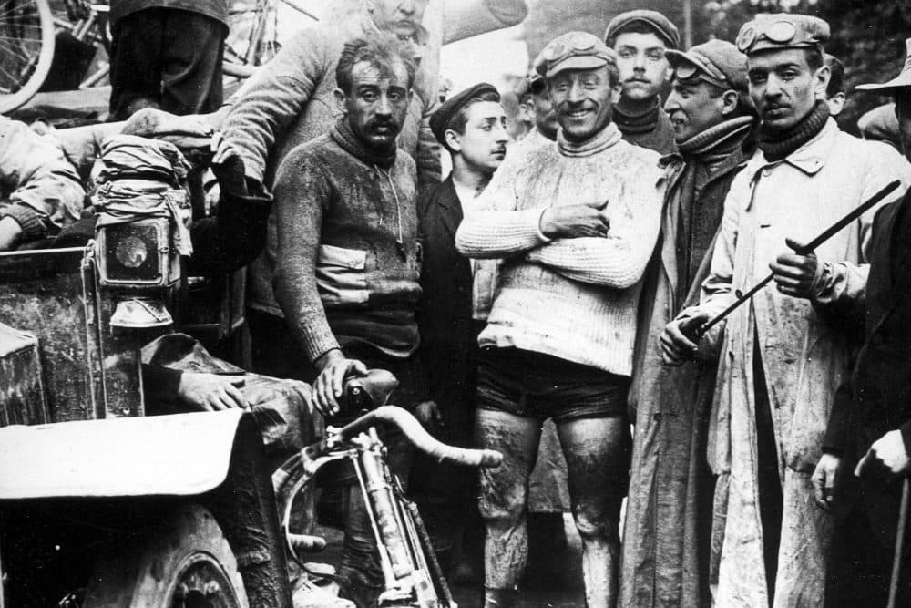
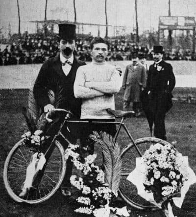

Maurice Garin · 1903

A chimney sweep turned racing legend, Maurice Garin won the
inaugural Tour de France with a commanding lead across all six
stages. Born in Italy and naturalised French, he completed the
2,428-kilometre course through gravel roads and summer dust at an
average speed that stunned a nation still becoming accustomed to the
bicycle. His victory cemented the race as an institution.
Garin's
form was so dominant in that first edition that he finished nearly
three hours ahead of the next man — a margin that has never been
matched again. The Tour was conceived as a publicity stunt for a
newspaper; Garin turned it into legend. He was disqualified from the
1904 edition for taking a train, and retired from professional
racing not long after. The race, however, was just beginning.
1903 Tour de France
How dominant was Maurice Garin?
Each bar represents total finishing time over 2,428 km. The last finisher took nearly double the winner's time.


